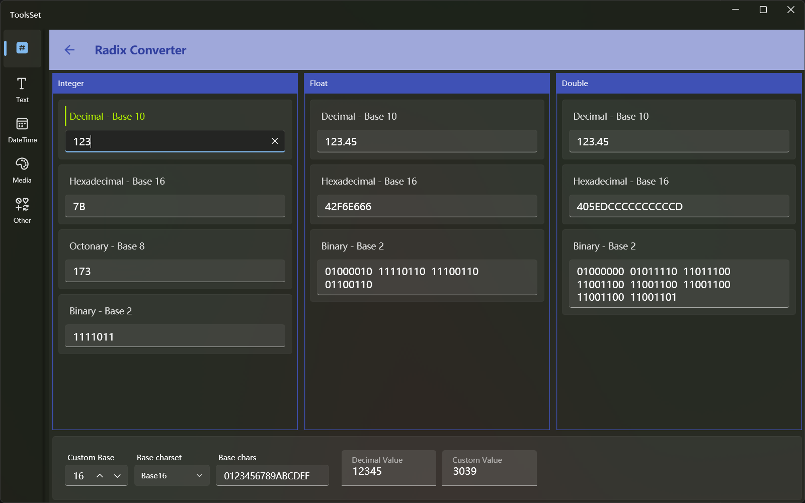

RadixConverter
Introduce
This tool supports
- Convert Dec, Hex, Oct and Bin to each other
- Float and double to Hex and Bin
- Hex to flaot or double
- Arbitrary conversion of decimal integer
- Decimal integers are converted into strings of the specified character set

If the conversion data format is entered incorrectly, the contents of the other corresponding result text boxes will be cleared
How to use
Integer conversion
The first area at the top is the integer conversion area, and there are four text boxes used to input:
- Dec
- Hex (up to 16 Hex characters, case-insensitive)
- Oct
- Bin (up to 64-bit 0 or 1)
Enter a string that conforms to the format in each text box, and the other three text boxes can display the corresponding conversion results of other formats
The data range is a signed 64-bit integer range, i.e. -9,223,372,036,854,775,808 to 9,223,372,036,854,775,807, and the hexadecimal is: 80000000000000000000 ~ 7FFFFFFFFFFFFFF
Float conversion
The second area at the top is the float conversion area, and there are three text boxes used to input:
- Dec (range is -3.4028235E38 ~ 3.4028235E38)
- Hex (up to 8 Hex characters, case-insensitive)
- Bin
Dec and Hex can be entered, and binary is read-only
Double conversion
The third area at the top is the double conversion area, and there are three text boxes used to input:
- Dec (range is -1.7976931348623158E308 ~ 1.7976931348623158E308)
- Hex (up to 16 Hex characters, case-insensitive)
- Bin
Dec and Hex can be entered, and binary is read-only
Float and double convert inputs support scientific notation, you need to pay attention to the input method, you can use two ways to input
- Enter the exponent first, followed by significant figures. For example, if you enter 1.2e3, enter e3 first, and then enter 1.2 before e
- Enter all the numbers first, then enter the e. For example, if you enter 1.2e3, enter 1.23 first, and then enter e before 3
- The letter e is not case-sensitive
Arbitrary radix conversion
At the bottom of the interface, you can convert integers to any base, the controls are:
- Custom base: Enter the base you want to convert
- Base charset: Several predefined character sets are available to choose from
- Base chars: You can edit the characters used in the conversion result
- Decimal value: The number before conversion, the conversion result can be obtained when entered
- Custom value: The result of conversion, you can enter the reverse conversion to get the number before the conversion
The predefined character set includes Base16, Base64, base 27 (lowercase/uppercase letters), base 10 Chinese, Base2 and other methods
When you select a predefined character set, the Custom base is automatically modified based on the selected character
Conversion examples:
| Decimal value | 123 |
| Base16 | 7B |
| Base64 | 1X |
| Lowercase | do |
| Uppercase | DO |
| Chinese1 | 一二三 |
| Chinese2 | 壹贰叁 |
| Base2_1 | ▮▮▮▮▯▮▮ |
| Base2_2 | ││││─││ |
| Base2_3 | ➊➊➊➊⓪➊➊ |
| Base2_4 | ⌃⌃⌃⌃⌄⌃⌃ |
Conversions can be done using other base and custom characters
For example, 123 is represented as 323 in the Hex value of the number, and >>< is expressed in the base 5 of the character set []-<><
If the conversion base is greater than the number of characters provided, the values not included in the character set will be expressed as [N], e.g. 123 with only ab in the base 3 will result in bbb[2]a
Don't use duplicate characters in character sets
The characters used in reverse conversion must be included in the set of characters and are case-sensitive